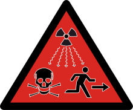

la radioactivité est un phénomène découvert en 1896 par Henri Becquerel sur l'uration et très vite
confirmé par Marie Curie pour l'uranium
il s'agit d'un phénomène physique naturel au cours duquel des noyaux atomiques instables, dits
radioisotopes, se transforment
spotanément (se désintègrent) en dégageant de l'énergie sous la forme de rayonnements divers,
pour se transformer en des noyaux
atomiques plus stables ayant perdu une partie de leur masse. Les rayonnements ainsi émis
sont appelés, selon le cas, des rayons (alpha), des
rayons (beta) ou des rayons (gamma).
Signalétique usuel
| Risque d'irration. | Risque de danger de mort ou de dommages sérieux. |
|---|---|
|
|
 |
Pour mesurer la radioactivité, on distingue deux types de grandeurs : les grandeurs objectives et les grandeurs subjectives.
ces grandeurs sont mesurables à l'aide d'appareils de phgysique:
Becquerel (Bq)
Le becquerel mesure l'activité d'une source radioactive, cette unité mesure le nombre de désintégrations par seconde
Curie (Ci)
Le curie était autrefois utilisé : il se définit comme l'activité d'un gramme de radium, soit 37x109 par seconde, soit 37
Bq = 1 nCi
Ce sont des grandeurs non mesurable directement. Elles sont estimées à partir de mesures et de coefficients de pondération
définis par la
Commission internationale de protection radiologique (CIPR).
Gray (Gy)
Le gray mesure la dose absorbée par la cible est définie comme l'énergie reçue par unité de masse de la cible, en joule par
kilogramme (J/kg).
Sievert (Sv)
Le sievert mesure la dose équivalente, H, pour laquelle chaque rayonnement doit être pondéré pour tenir compte de leur nocivité respective.
| Emetteur | Activité | |
|---|---|---|
| Corps Humain | 8000 Bq | |
| Elément | Isotope | Activité |
| Potassium (K) | 40K | 263kBq/g |
| Uranium (U) | 235U | 80kBq/g |
| 234U | 230MBq/g | |
Source : Wikipédia